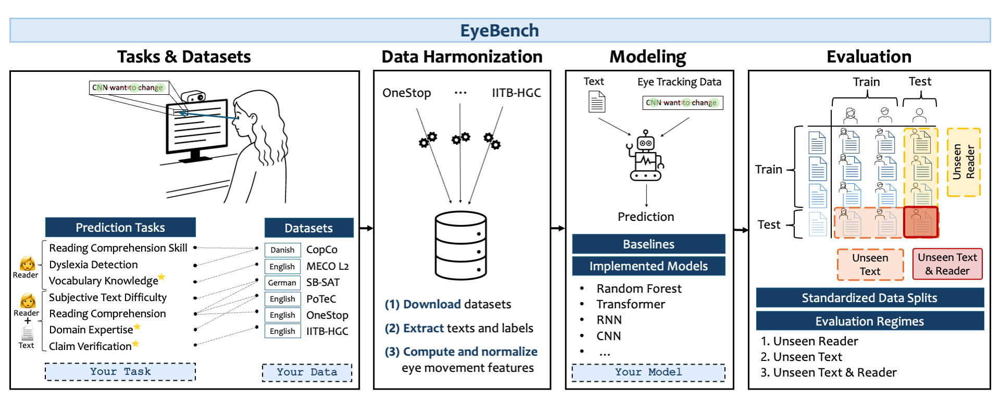

EyeBench: Predictive Modeling from Eye Movements in Reading
Abstract
EyeBench provides a comprehensive benchmark for predictive modeling from eye movements in reading. Eye tracking data reveals rich information about cognitive processes during reading, including attention patterns, reading comprehension, and individual differences in reading behavior. This benchmark aims to standardize evaluation protocols and provide datasets for developing and testing predictive models that leverage eye movement data to understand and predict various aspects of reading behavior.
Overview

Overview of EyeBench v1.0. The benchmark curates multiple datasets for predicting reader properties (👩), and reader–text interactions (👩+📝) from eye movements. * marks prediction tasks newly introduced in EyeBench. The data are preprocessed and standardized into aligned text and gaze sequences, which are then used as input to models trained to predict task-specific targets. The models are systematically evaluated under three generalization regimes — unseen readers, unseen texts, or both. The benchmark supports the evaluation and addition of new models, datasets, and tasks.
BibTeX
@inproceedings{shubieyebench,
title={EyeBench: Predictive Modeling from Eye Movements in Reading},
author={Shubi, Omer and Reich, David Robert and Klein, Keren Gruteke and Angel, Yuval and Prasse, Paul and J{\"a}ger, Lena Ann and Berzak, Yevgeni},
booktitle={The Thirty-ninth Annual Conference on Neural Information Processing Systems Datasets and Benchmarks Track}
}